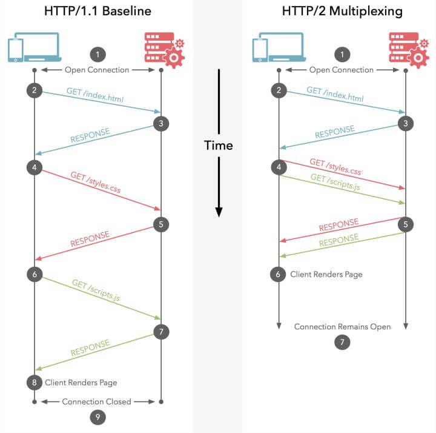
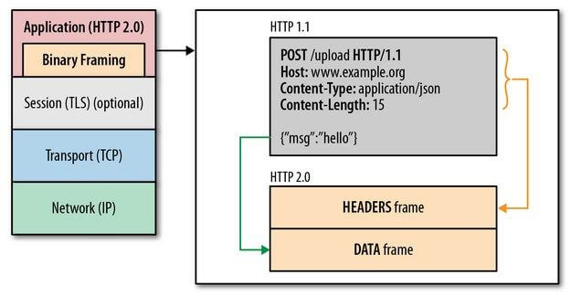

概述
Web 的诞生，源于三大技术的诞生，它们都是当年 Web 之父 Tim Berners-Lee 自己 开发的，世界上第一个网站诞生的时间是 1991 年，三大技术的诞生也就是在此之前的不久：
- 可以指向任何网页的 URL
- html
- HTTP 协议
HTTP 是超文本传输协议 Hypertext Transfer Protocol 的缩写。从服务器上到浏览器里，这个过程是基于 HTTP 协议来传输数据的。
Web 内容都是存储在 Web 服务器上的，Web 服务器都是基于 HTTP 协议的，因此也被称为 HTTP 服务器。
HTTP 服务器存储了各种类型的数据，如果 HTTP 的客户端发出请求的话，服务器就会返回数据给客户端，叫做响应
HTTP 的服务器和客户端是万维网（ World Wide Web ）的基本单元。最常见的客户端就是浏览器。浏览一个页面的时候，浏览器会向服务器发出一个 HTTP 请求。等到服务器响应返回之后，浏览器再去处理响应数据，以美观的形式展示给用户
【特性】
HTTP 是一个无状态的协议。所谓无状态（ stateless ）意思就是：对于之前的交互没有记录。每次交互能用的信息就只有这次交互所携带的信息
换句话说，HTTP 协议是没有办法记住之前的一次请求的，所以也没有办法根据前一次请求来辅助后一次请求。当一个Web 应用看起来似乎可以记住之前的交互，例如，可以记住你的用户名，其实它采用的技巧已经超出了 HTTP 本身。HTTP 的信息就好像是可以自销毁的，每次读取完毕，立刻就消失了。总之，HTTP 就是无状态的，也就是不能记录或者维持某种状态的。
因此，HTTP 方法具有幂等性，一次和多次请求某一个资源应该具有同样的副作用
HTTP/1.1中对幂等性的定义是：一次和多次请求某一个资源对于资源本身应该具有同样的结果（网络超时等问题除外）。也就是说，其任意多次执行对资源本身所产生的影响均与一次执行的影响相同。
【资源和URL】
HTTP 故事的开始是浏览器发出请求。但是请求的是什么呢？是服务器上的资源，英文叫 Resource
对应的每一个资源，都有一个 URL ，也就是统一资源定位地址，指向这个资源。不过资源分两种：一种是静态资源，也就是各种文件了，最常见的就是静态 HTML ，但是也可以是 PDF ，json 文件等等。另外一种，就是动态资源，也就是 URL 指向的地方不是一个文件，而是一段代码的入口，服务器经过运算后，才返回运算结果给客户端。所以， 我们有 https://xxx.com/src/css/main.css ，这个 URL 就是指向一个静态资源的。如果是 https://xxx.com/posts 这个可能就是指向动态资源的，后台对应的可能就是一个 API
请求和响应
【请求】
1、请求行
第一行的内容被叫做请求行 Request Line ，具体形式如下
GET/POST [url] HTTP/[version]
GET / HTTP/1.1
这一行就是以HTTP 方法（ HTTP Method ）打头，一般是 GET 或者 POST ，当然还有其他方法。 当我们用 GET 发请求的时候，一般我们就是想要从服务器上 GET （拿到）一些内容，而不是想去修改服务器数据。POST 正好就是用来修改服务器上的数据的。到底要 GET 或者要修改的资源，就是后面的 URL 这一项来指定了。上面例子中，请求的 URL 是 / 。最后就是跟 HTTP 字样，再跟上到底是使用的哪个版本的 HTTP 协议，目前一般都是 HTTP 1.1 了
2、请求头部
[header 名]：[header 值]
> Host: baidu.com
> User-Agent: Mozilla/5.0 (Macintosh; Intel Mac OS X 10_12_5) AppleWebKit/537.36 (KHTML, like Gecko) Chrome/73.0.3683.103 Safari/537.36
> Accept: */*
都是以冒号隔开的键值对。上面三项：
Host 代表被请求的主机
User-Agent 代表用户使用的客户端
Accept 后面指明客户端可以接受的返回资源的类型，* 代表所有类型都接受
3、负载数据
header 之下，一个 request 中还可能包含负载数据（ payload ）。这一项，请求中不一定会包含。GET 请求都是不带负载数据的，POST 请求带负载数据。这个挺好理解，POST 方法的请求都是要改动服务器数据的，当然要在请求中携带数据过去。
比如，页面上有一个表单 form ，填写几项数据，然后一点提交，这个就会发出一个 POST 请求，而填写的数据， 就会作为 payload 成为请求的一部分
【响应】
1、状态行
对于请求有请求行，响应的第一行也很特别，叫做状态行 （ status line ） ，基本格式如下
HTTP[版本号] [状态码] [状态信息]
HTTP/1.1 200 OK
简单介绍一下状态码
20x 的状态码都代表某种成功状态。最常见的 200 ，它的意义，就正如它后面跟的状态信息 一样，代表一切 OK 。
30x 的状态码，意味着资源已经被移动到其他地方了，但是响应中给出了应该跳转到哪里去找到这个资源。这个行为的术语就叫做 redirect （重定向）。
40x 的代码也都是代表一种客户端请求错误 。一个最常见的状态码 404 ，它的意义也跟它后面紧跟的状态信息所说的 一样：Page Not Found （页面未找到）。
50x 的状态吗也很常见。返回的如果是这一系列的状态码，就意味着 服务器端在处理请求的时候出错 。50x 出现，对于开发者，一般意味着服务器端代码出了错误。
2、响应头部
[ header 名]: [ header 值]
accept-ranges: bytes
age: 11912447
cache-control: max-age=315360000
content-encoding: gzip
content-length: 14543
content-type: application/javascript
date: Wed, 24 Apr 2019 00:24:43 GMT
etag: "8282-559c0e7235a80"
expires: Mon, 04 Dec 2028 03:23:56 GMT
last-modified: Fri, 22 Sep 2017 05:58:50 GMT
ohc-response-time: 1 0 0 0 0 0
server: JSP3/2.0.14
status: 304
vary: Accept-Encoding,User-Agent
3、响应主体
响应主体，response body ，也可以叫做 payload
<!DOCTYPE html>
<html>
<head>
<title>xiaohuochai</title>
<meta charset="utf-8">
<meta name="viewport" content="width=device-width, initial-scale=1" />
...
</head>
<body>
...
</body>
</html>
【查询字符串】
GET 请求中携带一些数据到服务器端的方法并不唯一，但是一种非常简单也非常常用的方式就是，使用查询字符串来传递数据，或者叫传递参数
如果打开 chrome 浏览器，打开 chrome 开发者工具的 Network 标签。然后浏览器中访问
www.xxx.com?name=jack&age=18
上面的 ?name=jack&age=18就是查询字符串，这里面传递了两个个参数，name和age
方法
每次发请求的时候，处理请求的 url 之外，还必然有一个请求方法
HTTP方法包括如下
GET ，最常用的一种，用于从服务器上“得到”某个资源
POST，往服务器上写入数据，跟 GET 作用相反
PUT，也是写入数据，通常的用法是 POST 创建新数据，PUT 用来更新已有数据
DELETE，删除服务器上的数据
HEAD，跟 GET 一样，也是请求服务器上的资源，但是只要响应的 Headers ，这个不太常用，不用管
其他的还有 TRACE，OPTIONS，PATCH 等，都不常用
【RestFul】
上面的列出的各种 HTTP 方法的使用场合其实没有严格的规定的，如果作为开发者，非要用 GET 请求来写数据到 服务器，也不是不可以做到的。但是尊重 HTTP 方法（有时候也叫做 HTTP 动词）的本来用法，是个好的习惯。
Nodejs 开发领域非常常用的 RESTful 架构，就是尊重 HTTP 方法本意的一个典范：
GET /posts # 读取所有文章
GET /posts/:id # 读取一篇文章
POST /posts # 发布一篇文章
PUT /posts/:id # 更新一篇文章
DELTE /posts/:id # 删除一篇文章
在 RESTful 的思路里面，HTTP 的方法的本意和用它真正发出请求执行的行为是非常吻合的
会话
会话就是服务器和浏览器的保有共同的信息的这段时间。换句话，会话开始和结束，就意味着服务器从认识一个浏览器到不再认识这个浏览器
会话可以让无状态的 HTTP 协议保持特定的状态。这种在客户端与服务器之间传递会话 id的机制，能让服务器创建一种各次请求之间的持续连接状态。Web 开发人员利用这种人造的状态，来构建一些”有状态“的应用场景：例如用户处于一直登陆的状态，购物车里面之前添加的商品，后续访问中还有等等。不过即使这样，每一个 HTTP 请求本质上来说还是无状态的，各次请求之间并不知道彼此的存在。
【技术机制】
实现会话的方法不唯一，最常见的一个方式是这样：
1、准备建立会话的时候，服务器会在自己的内存里创建一个新的变量，例如这个变量叫做 session-3254
2、服务器把这个会话的 id 也就是 3254 发送到浏览器，浏览器会把这个 id 保存到 cookie 中
3、每次浏览器再去访问服务器的时候，都会携带 cookie 中存放的 3254 这个会话 id 值，这样浏览器就认识这个浏览器了
4、服务器端的 session-3254 变量中可以存放任意的会话数据，例如：用户名，购物车里有哪几件商品等等
5、每次浏览器访问服务器，都可以凭借自己的会话 id 去服务器的 session-3254 变量中去认领属于我的信息
每一个请求都会包含这个会话 id ，这样服务器就能唯一确认客户端啦。 这样，直到会话过期，客户端和服务器都是互相认识的
【会话过期】
服务器上有多少个浏览器在访问，就会在自己内存中创建多少了类似 session-3254 这样的变量。但是，还有一点非常重要，在一个会话里发出的会话 id 是唯一的，而且有一个很短的过期时间。那什么情况下会话就会过期呢？
1、手动删掉 cookie 中的会话 id （在 chrome devtools 里，右键 cookies 然后删除它）
2、点一个网站的退出登录按钮
3、关闭网站有时候也通常能结束会话
【会话劫持】
会话 id 作为一个唯一的令牌来唯一标识一个会话。通常，会话 id 是作为 cookie 存储在计算机上的一个随机字符串。很多 web 应用的用户认证系统所在做的事情，当用户的用户名和密码匹配之后，会话 id 会存储在用户的浏览器里，这样下一个请求就不用重新认证了
不幸的是，如果一个攻击者拿到了这个会话 id ，他就会跟我共享这一个会话，那服务器就会把他当成我，我的所有权限，他都不需要知道我的用户名密码，都可以获得了
这种情况就需要安全的 HTTP 也就是 HTTPS 来帮忙啦。通过 HTTPS 发送的请求和响应在发送前都会被加密。这意味着如果一个恶意的黑客监听 HTTP 通信，他得到的信息都是加密的，就是截获了也看不懂是个啥
XSS
跨站脚本（英语：Cross-site scripting，通常简称为：XSS）是一种网站应用程序的安全漏洞攻击，是代码注入的一种。它允许恶意用户将代码注入到网页上，其他用户在观看网页时就会受到影响。这类攻击通常包含了HTML以及用户端脚本语言。
XSS攻击通常指的是通过利用网页开发时留下的漏洞，通过巧妙的方法注入恶意指令代码到网页，使用户加载并执行攻击者恶意制造的网页程序。这些恶意网页程序通常是JavaScript，但实际上也可以包括Java，VBScript，ActiveX，Flash或者甚至是普通的HTML。攻击成功后，攻击者可能得到更高的权限（如执行一些操作）、私密网页内容、会话和cookie等各种内容
如网站上有个评论框，然后恶意访客在里面输入了
Hello World <script>alert('Hello World')</script>
网站的行为被篡改了，或者说网站已经被 XSS 了
恶意用户可以使用 HTML 和 javascript 代码对服务器或者以后访问这个页面的用户发起毁灭性的攻击。举个例子，一个攻击者可以使用 javascript 代码去获取所有在他之后访问这个页面的用户的会话 id ，然后伪装成这个用户
【解决办法】
1、消除有问题的输入。比如script标签，或者使用一个更安全的输入格式，比如 Markdown，这样就可以阻止 HTML 和 javascript 同时出现在用户的输入里
2、在显示之前转义用户输入的所有数据
总结起来一句话，总是对用户输入的内容做无害处理
【CSP】
CSP 的实质就是白名单制度，开发者明确告诉客户端，哪些外部资源可以加载和执行，等同于提供白名单。它的实现和执行全部由浏览器完成，开发者只需提供配置。
CSP 大大增强了网页的安全性。攻击者即使发现了漏洞，也没法注入脚本，除非还控制了一台列入了白名单的可信主机
两种方法可以启用 CSP。一种是通过 HTTP 头信息的Content-Security-Policy的字段
Content-Security-Policy: script-src 'self'; object-src 'none';
style-src cdn.example.org third-party.org; child-src https:
另一种是通过网页的<meta>标签
<meta http-equiv="Content-Security-Policy" content="script-src 'self'; object-src 'none'; style-src cdn.example.org third-party.org; child-src https:">
CSRF
跨站请求伪造（Cross-site request forgery），也被称为 one-click attack 或者 session riding，通常缩写为 CSRF 或者 XSRF， 是一种挟制用户在当前已登录的Web应用程序上执行非本意的操作的攻击方法。跟跨网站脚本（XSS）相比，XSS 利用的是用户对指定网站的信任，CSRF 利用的是网站对用户网页浏览器的信任
跨站请求攻击，简单地说，是攻击者通过一些技术手段欺骗用户的浏览器去访问一个自己曾经认证过的网站并执行一些操作（如发邮件，发消息，甚至财产操作如转账和购买商品）。由于浏览器曾经认证过，所以被访问的网站会认为是真正的用户操作而去执行。这利用了web中用户身份验证的一个漏洞：简单的身份验证只能保证请求发自某个用户的浏览器，却不能保证请求本身是用户自愿发出的
【防御措施】
1、检查Referer字段
HTTP头中有一个Referer字段，这个字段用以标明请求来源于哪个地址。在处理敏感数据请求时，通常来说，Referer字段应和请求的地址位于同一域名下。而如果是CSRF攻击传来的请求，Referer字段会是包含恶意网址的地址，这时候服务器就能识别出恶意的访问。
这种办法简单易行，工作量低，仅需要在关键访问处增加一步校验。但这种办法也有其局限性，因其完全依赖浏览器发送正确的Referer字段。虽然http协议对此字段的内容有明确的规定，但并无法保证来访的浏览器的具体实现，亦无法保证浏览器没有安全漏洞影响到此字段。并且也存在攻击者攻击某些浏览器，篡改其Referer字段的可能
2、添加校验token
由于CSRF的本质在于攻击者欺骗用户去访问自己设置的地址，所以如果要求在访问敏感数据请求时，要求用户浏览器提供不保存在cookie中，并且攻击者无法伪造的数据作为校验，那么攻击者就无法再执行CSRF攻击。这种数据通常是表单中的一个数据项。服务器将其生成并附加在表单中，其内容是一个伪乱数。当客户端通过表单提交请求时，这个伪乱数也一并提交上去以供校验。正常的访问时，客户端浏览器能够正确得到并传回这个伪乱数，而通过CSRF传来的欺骗性攻击中，攻击者无从事先得知这个伪乱数的值，服务器端就会因为校验token的值为空或者错误，拒绝这个可疑请求
3、使用JWT。并将其存储在本地存储localStorage中
DDOS
典型的 DDoS 攻击，全称是 Distributed Denial of Service，翻译成中文就是分布式拒绝服务。一般来说是指攻击者利用“肉鸡”对目标网站在较短的时间内发起大量请求，大规模消耗目标网站的主机资源，让它无法正常服务。在线游戏、互联网金融等领域是 DDoS 攻击的高发行业
如何应对DDOS攻击？
1、高防服务器
高防服务器主要是指能独立硬防御 50Gbps 以上的服务器，能够帮助网站拒绝服务攻击，定期扫描网络主节点等，这东西是不错，就是贵
2、黑名单
设置黑名单，但也会封锁正常流量，影响到正常业务
3、DDOS清洗
对用户请求数据进行实时监控，及时发现DOS攻击等异常流量，在不影响正常业务开展的情况下清洗掉这些异常流量
4、CDN
在现实中，CDN 服务将网站访问流量分配到了各个节点中，这样一方面隐藏网站的真实 IP，另一方面即使遭遇 DDoS 攻击，也可以将流量分散到各个节点中，防止源站崩溃
HTTP2
HTTP/2（超文本传输协议第2版，最初命名为HTTP 2.0），简称为h2（基于TLS/1.2或以上版本的加密连接）或h2c（非加密连接），是HTTP协议的的第二个主要版本，使用于万维网。
HTTP/2是HTTP协议自1999年HTTP 1.1发布后的首个更新，主要基于SPDY协议。它由互联网工程任务组（IETF）的Hypertext Transfer Protocol Bis（httpbis）工作小组进行开发。该组织于2014年12月将HTTP/2标准提议递交至IESG进行讨论，于2015年2月17日被批准
HTTP/2标准于2015年5月以RFC 7540正式发表。多数主流浏览器已经在2015年底支持了该协议。此外，根据W3Techs的数据，在2017年5月，在排名前一千万的网站中，有13.7%支持了HTTP/2
HTTP/2的出现，相比于 HTTP 1.x ，大幅度的提升了 web 性能。在与 HTTP/1.1 完全语义兼容的基础上，进一步减少了网络延迟
【多路复用】
多路复用允许同时通过单一的 HTTP/2 连接发起多重的请求-响应消息
众所周知 ，在 HTTP/1.1 协议中，浏览器客户端在同一时间，针对同一域名下的请求有一定数量限制。超过限制数目的请求会被阻塞。chrome下是6个，这也是为何一些站点会有多个静态资源 CDN 域名的原因之一
而HTTP/2 的多路复用(Multiplexing) 则允许同时通过单一的 HTTP/2 连接发起多重的请求-响应消息

因此 HTTP/2 可以很容易的去实现多流并行而不用依赖建立多个 TCP 连接，HTTP/2 把 HTTP 协议通信的基本单位缩小为一个一个的帧，这些帧对应着逻辑流中的消息。并行地在同一个 TCP 连接上双向交换消息
【二进制分帧】
HTTP/2 所有性能增强的核心在于新的二进制分帧层，它定义了如何封装 HTTP 消息并在客户端与服务器之间传输

这里所谓的“层”，指的是位于套接字接口与应用可见的高级 HTTP API 之间一个经过优化的新编码机制：HTTP 的语义（包括各种动词、方法、标头）都不受影响，不同的是传输期间对它们的编码方式变了。HTTP/1.x 协议以换行符作为纯文本的分隔符，而 HTTP/2 将所有传输的信息分割为更小的消息和帧，并采用二进制格式对它们编码
【首部压缩】
每个 HTTP 传输都承载一组标头，这些标头说明了传输的资源及其属性。 在 HTTP/1.x 中，此元数据始终以纯文本形式，通常会给每个传输增加 500–800 字节的开销。如果使用 HTTP Cookie，增加的开销有时会达到上千字节。为了减少此开销和提升性能，HTTP/2 使用 HPACK 压缩格式压缩请求和响应标头元数据
【服务器端推送】
HTTP/2 新增的另一个强大的新功能是，服务器可以对一个客户端请求发送多个响应。 换句话说，除了对最初请求的响应外，服务器还可以向客户端推送额外资源，而无需客户端明确地请求